Anthurium Hybrid Daddy Neon¶
- Section
Undocumented
- Creator
Defining Characteristics¶
Daddy Neon has not been grown out yet, but will be updated once seedlings show defining traits.
The traits we are looking for are the striking neon veins of the seed parent, winged lobes of the pollinator, bullate leaf texture and dark colour of both parents.
Parents¶
Seed parent (left) is Zen @zenm8’s Rufflegetii - a Forgetii hybrid with ruffled, semi-peltate sinus and striking neon veins on hardening leaves. Pollen parent (right) is Gracie @gracie__grows’ Complex X
 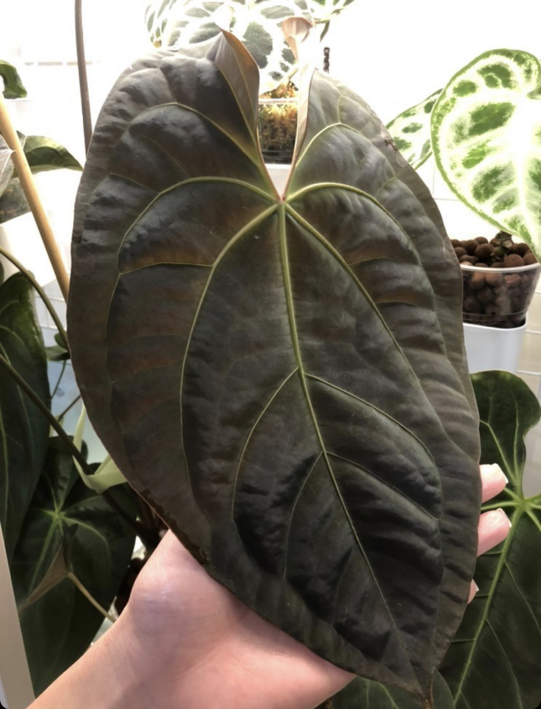
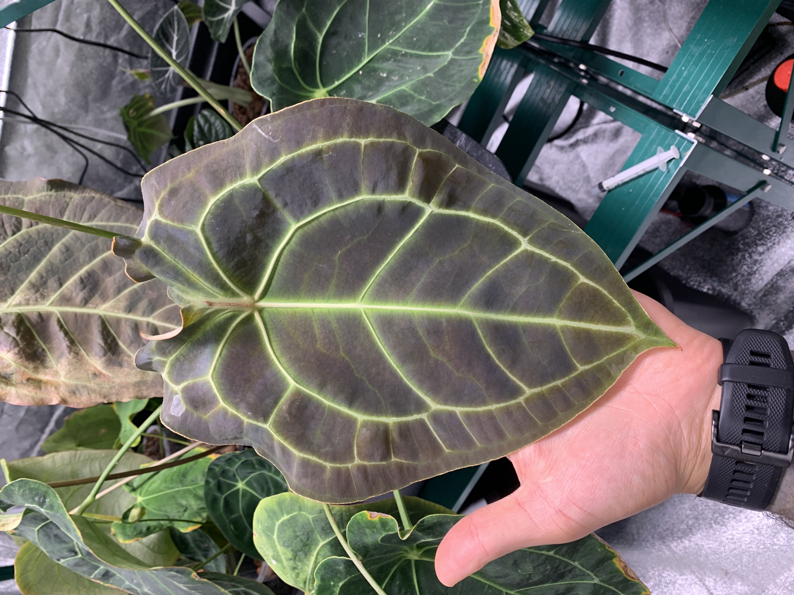
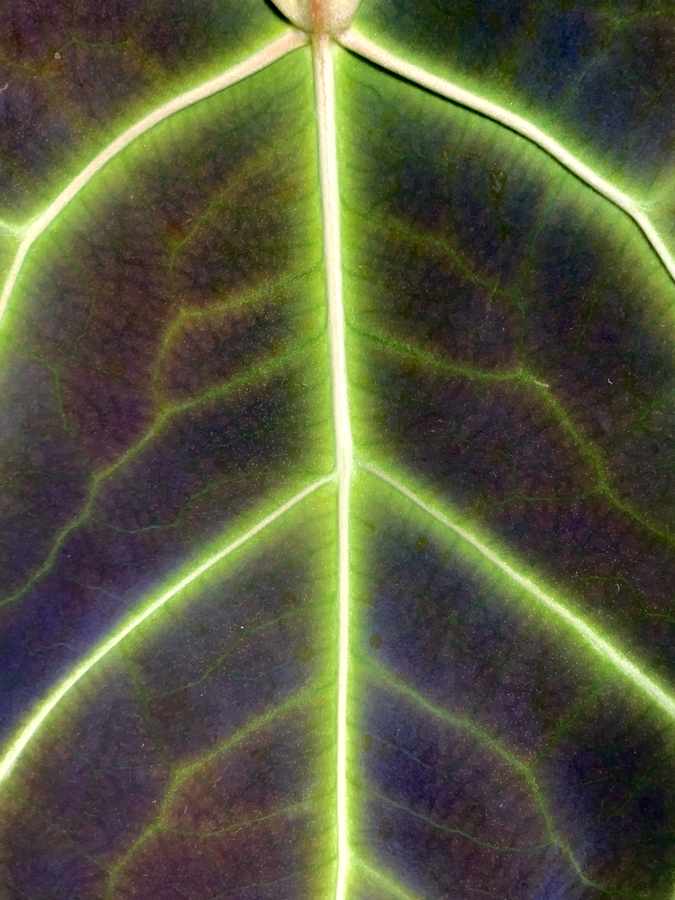
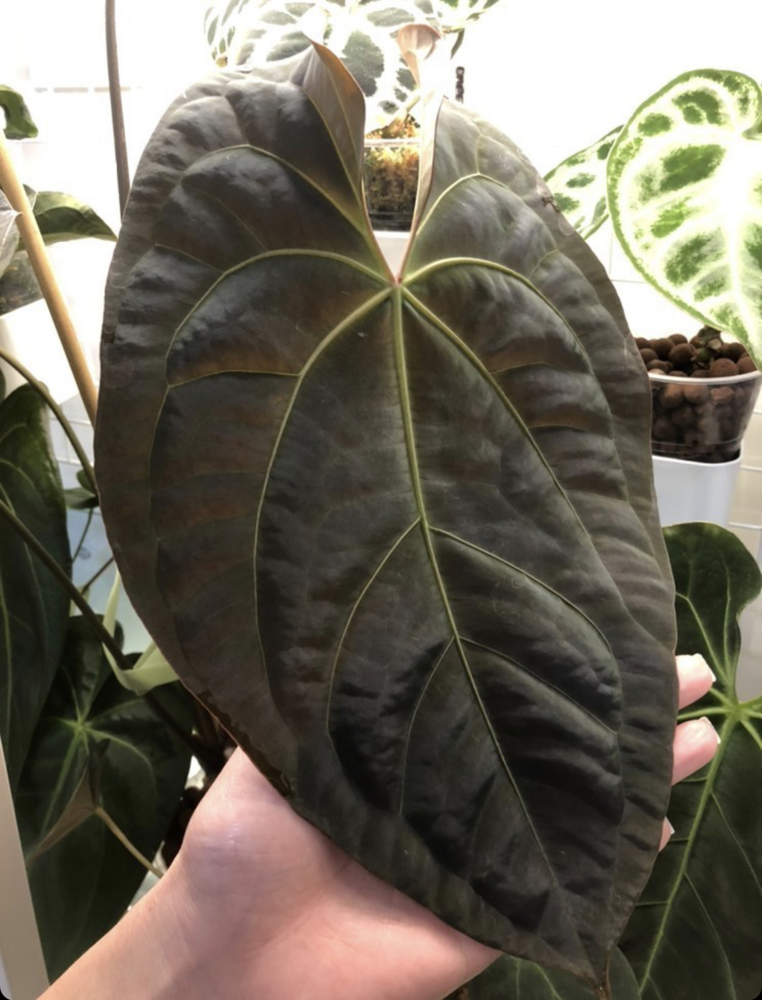
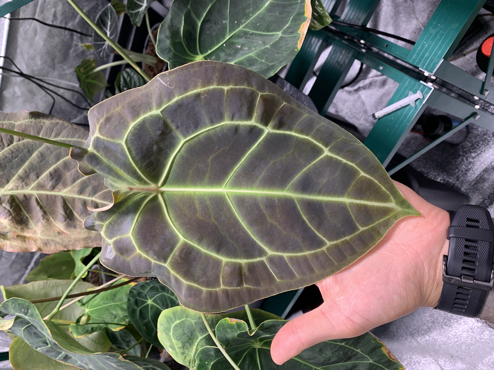
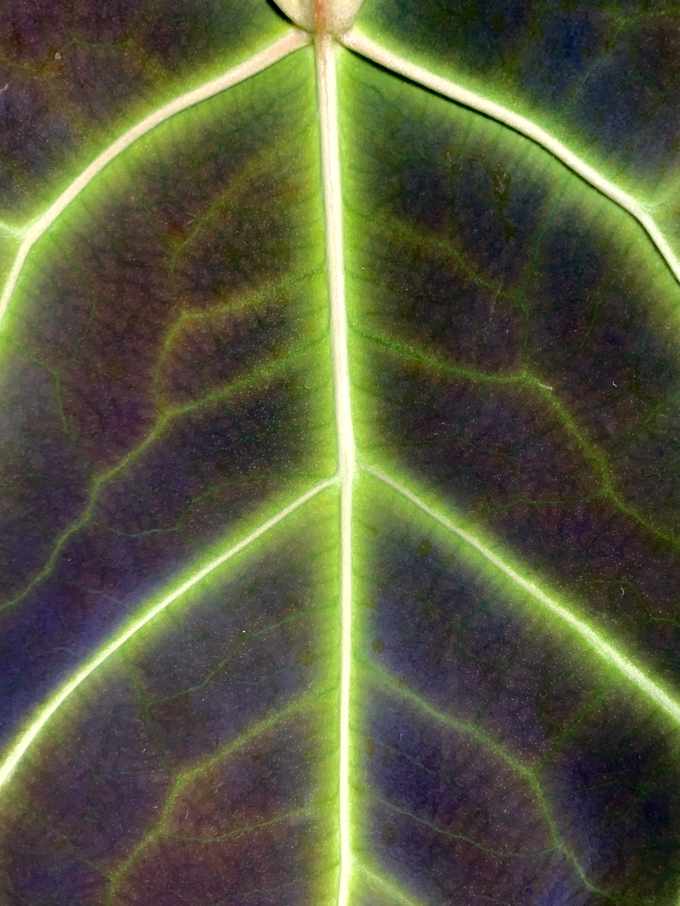

 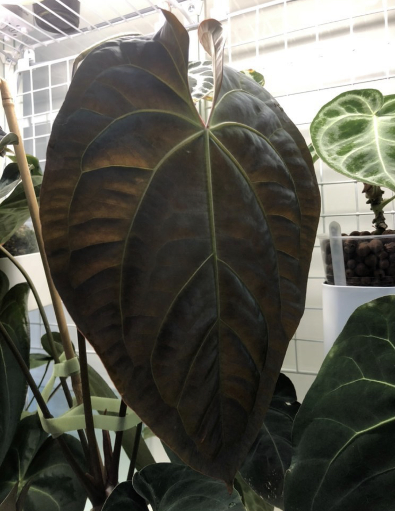
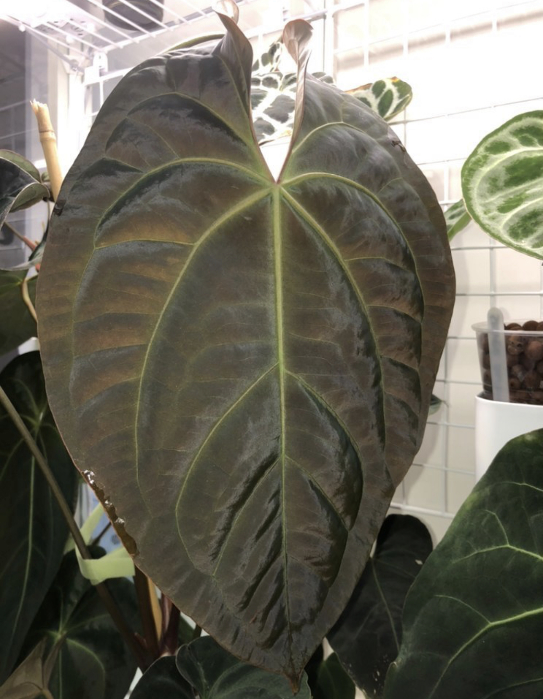
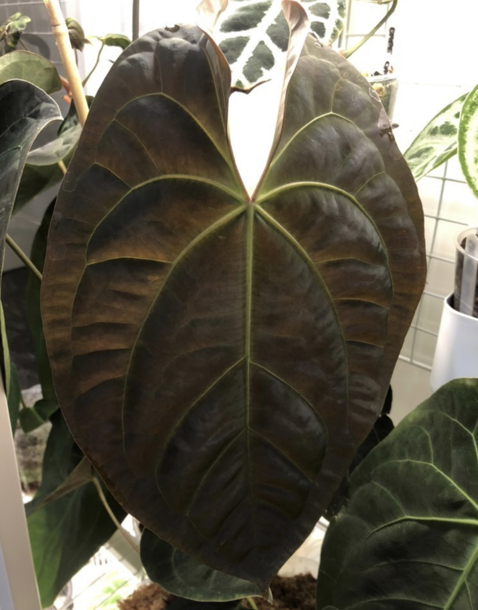
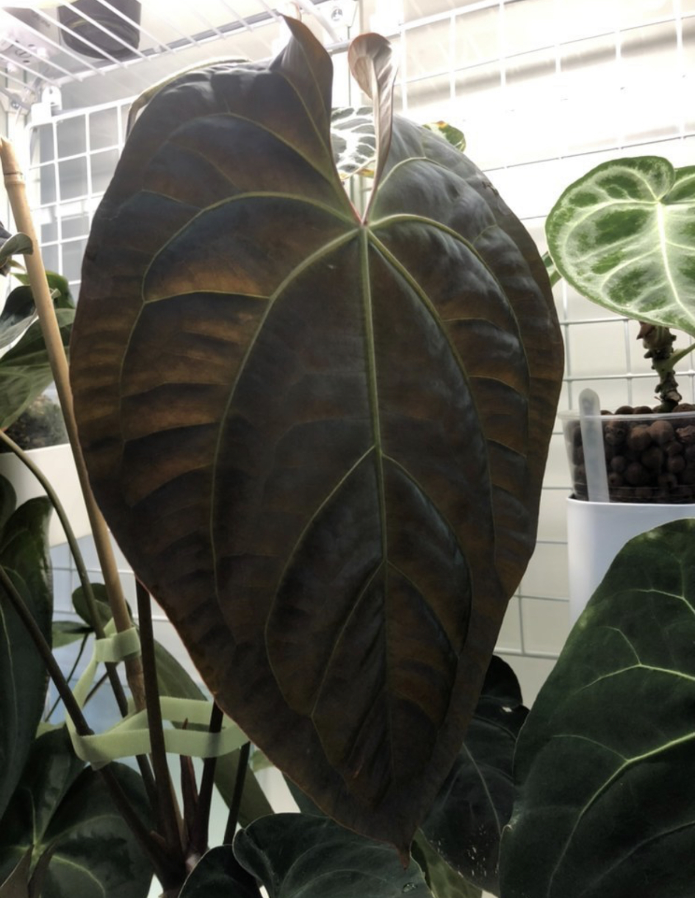
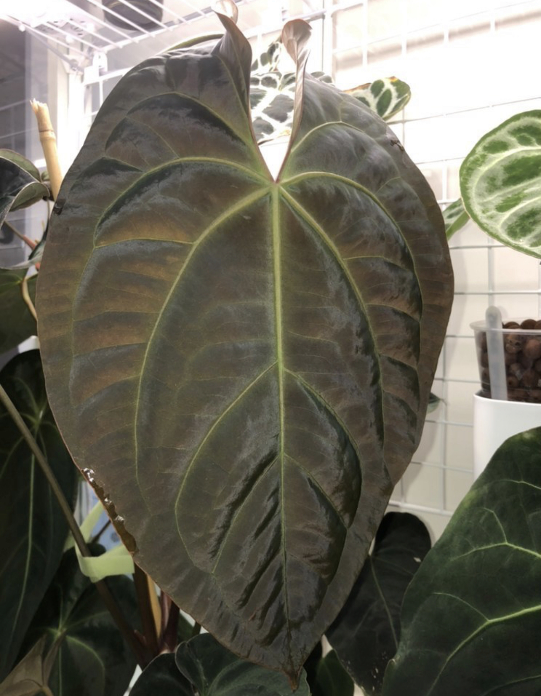
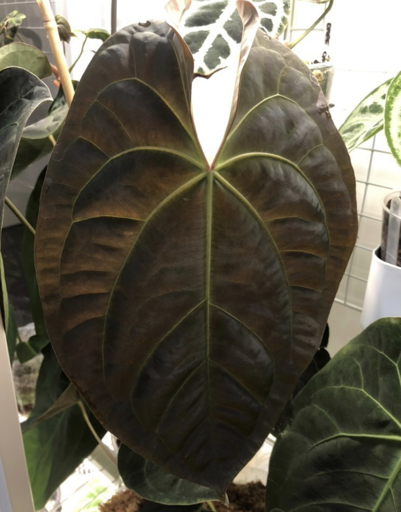
Known Hybrids¶
It’s unclear if Daddy Neon can set seed or pollinate another Anthurium hybrid or species.